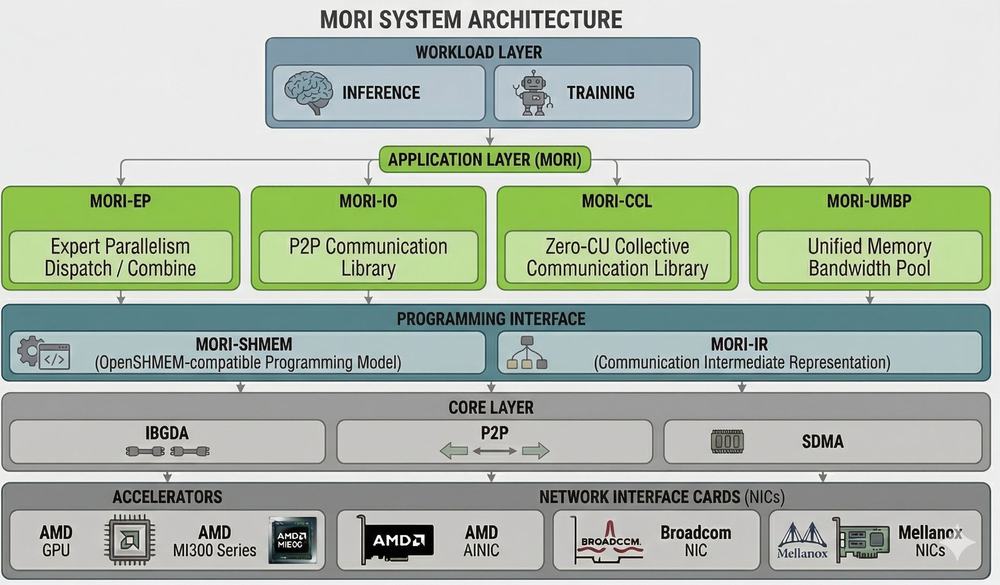

MORI Documentation
MORI (Modular RDMA Interface) is a bottom-up, modular, and composable framework for building high-performance communication applications with a strong focus on RDMA + GPU integration.
New to MORI? Install it, then work through the Quickstart.

Components
Component |
What it is |
Start here |
|---|---|---|
MORI-EP |
Intra and inter-node dispatch/combine kernels for MoE Expert Parallelism |
MORI-EP User Guide (EPv1 on MORI-SHMEM, EPv2 on MORI-CCO, and how to choose), then Choosing an EP API and backend |
MORI-FUSED |
GEMMs fused with the all-reduce, reduce-scatter, all-to-all or all-gather next to them, overlapping the transfer with the GEMM over the SDMA copy engines; built on MORI-CCO |
|
MORI-SHMEM |
OpenSHMEM-style symmetric memory APIs for GPU memory and RDMA |
|
MORI-CCO |
Next-Generation Collective Communication Object for GPUs: symmetric memory, natively designed for compute-communication fusion (LSA / GDA / SDMA) |
|
MORI-IO |
Point-to-point communication library for KVCache transfer via RDMA/XGMI |
|
MORI-UMBP |
Unified memory and bandwidth pool with tiered storage and distributed KV access |
|
MORI-VIZ |
Warp-level kernel profiler with Perfetto integration |
Supported Hardware
GPUs: MI308X, MI300X, MI325X, MI355X
NICs: AMD Pollara (AINIC), Mellanox ConnectX-7, Broadcom Thor2 (Volcano under development)
Documentation versions
The page title identifies an exact release tag or a development source commit. Development documentation can describe features that are not in the latest stable package. Check the release notes and the backend restrictions before choosing a deployment configuration.
Quick Links
GitHub: https://github.com/ROCm/mori